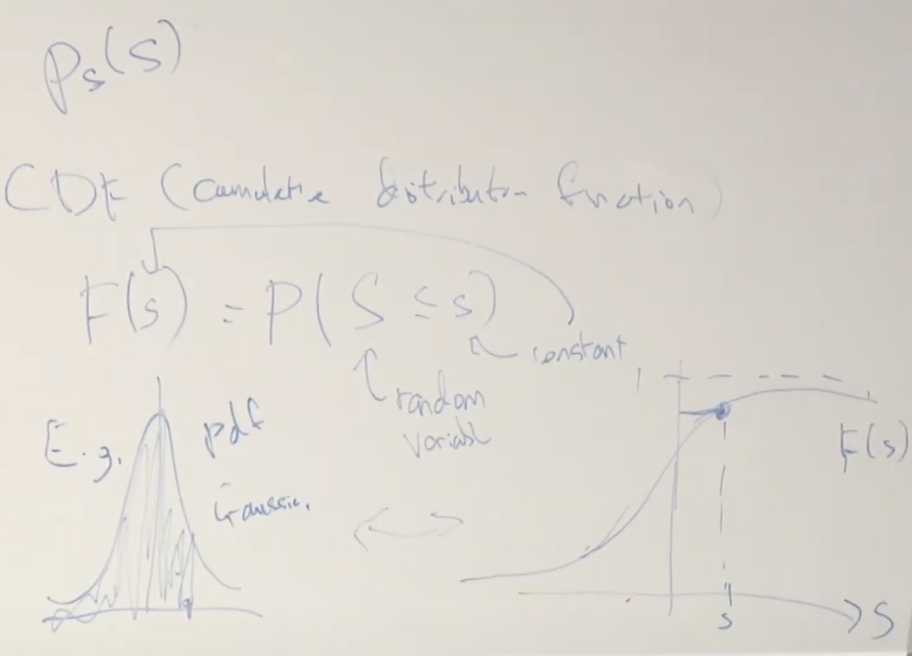

Lec 16-Independent Component Analysis-RL
Contents
Lec 16-Independent Component Analysis-RL#
Outline#
Independent Component Analysis (ICA)
CDFs (cumulative distribution function)
ICA model
Reinforcement Learning
MDP
ICA problem statement#
sound emitted by speaker j at time i = \(s_{j}^{(i)}\)
microphone record \(x^{(i)} = As^{(i)}, x \in \mathbb R^{n}\)
say if you have n=2 speakers, A will be 2x2 matrix
A is called mixing matrix
assumption is number of speaker and microphone is same
Goal: Find \(W = A^{-1}\), so \(s^{(i)} = Wx^{(i)}\)
W is the unmixing matrix
the speakers record different combination of speaker voices.
Can we separate out the original n speaker speech signals?
How is it possible to separate out?
\(s_{1}\) and \(s_{2}\) are uniform between -1 and +1 (- Snapshot1 below)
when this passes through mixing matrix A, the axis changes to \(x_{1}\) and \(x_{2}\) (- Snapshot2 below)
on applying unmixing matrix W, the axis changes back to \(s_{1}\) and \(s_{2}\)
this transformation was possible because the source \(s_{1}\) and \(s_{2}\) were distributed uniformly between -1 and +1
in realty in real time, human voices are not distributed uniformly between -1 and +1
if the data is Gaussian, then ICA is not possible. Why?
uniform distribution is highly non-Gaussian distribution, which makes ICA possible
what if \(s_{1}\) and \(s_{2}\) came from Gaussian densities?
if so, the distribution \(s_{1}\) and \(s_{2}\) would be rotationally symmetric (- Snapshot3 below)
there will be rotational ambiguity, any axis could be \(s_{1}\) and \(s_{2}\)
you cannot map parallelogram back to square
Gaussian distribution is rotationally symmetric
so there is some ambiguity in the output of ICA
there are two types of ambiguity here
we dont know which is speaker 1 and which is speaker 2
we can flip this data horizontally or vertically or reflect this and we wont be able to differentiate which one is +\(s_{1}\) and which is -\(s_{1}\)
Snapshot 1
Snapshot 2
Snapshot 3
Gaussian density is the only distribution that is rotationally symmetric
if \(s_{1}\) and \(s_{2}\) are independent and rotationally symmetric, then the distribution has circular contours and it must be Gaussian density
ICA is possible only if data is non-Gaussian, and only then it is possible to recover the independent sources
CDF#
Relation between pdf and cdf
 $\tiny{\text{YouTube-Stanford-CS229-Andrew Ng}}$\(p_{s}(s) = F'(s)\)
ICA derivation#
Let the cdf be \(F(s)\) and its corresponding pdf be \(p_{s}(s)\)
Our model is \(x = As = W^{-1}s\) and \(s=Wx\)
If we know \(p_{s}(s)\), what is the density of \(p_{x}(x)\)
We might consider \(p_{x}(x) = p_{s}(Wx) = p_{s}(s)\), assuming w is an invertible matrix, this is a bijection. There is a one-to-one mapping between x and s.
This is incorrect
This works for probability mass function for discrete probability distribution but not for continuous probability distribution
The correct answer is \(p_{x}(x) = p_{s}(Wx)|W| = p_{s}(s)|W|\), where \(|W|\) is the determinant of matrix W
We need the determinant to make sure the distribution still normalizes to 1
determinant tells us how much the matrix/veector stretches out
We want to compute density of x because in the training set, we get to observe x only. To find the MLE parameters, we need to know the density of x, so that we can map and choose parameters W to maximize the likelihood.
Density of s is indicator function between 0 and 1
\(p_{s}(s) = \mathbb 1\{0 \le s \le 1\}\) and \(s \sim\) Uniform(0,1)
Let x = 2s in \(\mathbb R^{1}\) (A=2, W=1/2)
\(x \sim\) Uniform(0,2)
Area under curve for both \(p_{s}(s)\) and \(p_{x}(x)\) is 1
\(p_{x}(x) = \frac{1}{2}\mathbb 1\{0 \le x \le 2\}\)
where \(p_{x}(x) = p_{s}(Wx)|W|\)
and |W| = 1/2 = determinant of matrix W
\(F(s) = P(S \le s) = \frac{1}{1+e^{-s}}\) - sigmoid function as the cdf
pdf for sigmoid function will be F’(s)
the pdf that this induces will have fatter tails
which implies that it goes to 0 more slowly and this captures human voice and many other natural phenomenon lot better than the Gaussian density because there are larger number of extreme outliers
there are other distributions that work well - double exponential distribution or two sided exponential density or Laplacian distributio
this works well for many symmetric distributions
Density of s is equal to
\(p_{s}(s) = \prod\limits_{i=1}^{n}p_{s}(s_{i})\)
here n speakers are independent and they independently choose what sound to emit
So the density of x is equal to
\(p_{x}(x) = p_{s}(Wx)|W| = \left(\prod\limits_{j=1}^{n}p_{s}(W_{j}^{T}x)\right)|W|\)
MLE#
the log likelihood of W is
\(l(W) = \sum\limits_{i=1}^{m}\log\left[\left(\prod\limits_{j}p_{s}\left(W_{j}^{T}x^{(i)}\right) \right)|W|\right]\)
apply stochastic gradient descent \(\nabla_{W}l(W)\) to maximize the log likelihood, run it
this finds a pretty good matrix W for unmixing the sources
Reinforcement Learning#
make a computer learn how to move helicopter
give state at any point in time, you are asked to take action on how to move the control stick, to make helicopter fly in certain trajectory
there is no one right answer for how to move the control sticks of a helicopter
there is no one X to Y mapping as what is the true way to fly a helicopter
its an algorithm that doesn’t ask you to tell it exactly the right answer/one true way at every step
instead as a AI engineer, our job is to specify the reward function that tells when it’s flying well and when it’s flying poorly
write a cost function or a reward function that gives a high reward when its doing well and a large negative reward whenever it crashes or does something bad
something like training dog when its behaving well by saying good dog or bad dog
AlphaGo/chess
say it lost at step 50, but made a very bad move/blunder at step 20 and then continued for another 30 steps. The reward function must be able to tell that at step 30 it made a very bad move and have a large negative reward
the function is R(s) where R is the reward and s is the state
Markov Decision Process (MDP)#
RL solves problem using this MDP
MDP is a 5 set tuple \((S, A, \{P_{sa}\}, \gamma, R)\)
S - set of states
A - set of actions
\(P_{sa}\) - state transition probabilities \((\sum_{s'}P_{sa}(s') = 1)\)
this tells if you take action a from state s, what is the probability of ending at a particular different state s’
\(\gamma\) - discount factor \(\gamma \in\) (0,1]
R - reward function
11 possible states
actions A:{N,S,E,W}
there might be a wheel slip and probability may be {0.8 to N, 0.1 to W, 0.1 to E}
Design the reward function#
Incentivize reward to the end state as +1 and negative reward to state where you don’t want it to go as -1
Choose action \(a_{0}\)
Based on the action you took, you will end up in state \(s_{1} \sim P_{s_{0} a_{0}}\)
which is distributed according to state transition probabilities governed by the previous state and the action it chose. Based on the action it chooses it has different chances of moving N,E,W,S
From state \(s_{1}\), it will take new action \(a_{1}\)
Based on the action you took, it will end up in state \(s_{2} \sim P_{s_{1} a_{1}}\)
The process is as follows:
\(s_{0} \buildrel \rm a_{0} \over \rightarrow s_{1} \buildrel \rm a_{1} \over \rightarrow s_{2} \buildrel \rm a_{2} \over \rightarrow s_{3} \buildrel \rm a_{3} \over \rightarrow ... \)
The reward function is as follows:
\(R(s_{0}, a_{0}) + \gamma R(s_{1}, a_{1}) + \gamma^{2} R(s_{2}, a_{2}) + ...\)
The total rewards is the sum of rewards or sum of discounted rewards. The further reward is in future, the value of reward reduces because of lesser weight.
Generally the reward is \(\gamma = 0.99 (0,1]\)
This also encourages robot to get positive reward faster and postpone the negative rewards
Another interpretation of \(\gamma\) can be drawn from time value of money
Another interpretation of discount factor \(\gamma\) is they converge much faster with it. Its much harder for the algorithm to converge, if it is set to 1
Goal: Choose actions over time to maximize total payoff
\(E[R(s_{0}, a_{0}) + \gamma R(s_{1}, a_{1}) + \gamma^{2} R(s_{2}, a_{2}) + ...]\)
Most reinforcement algorithms define a policy(controller), which maps from states to actions
Policy(controller) \(\pi: S \rightarrow A\)
In the figure below, the optimal policy diagram it says the policy applied to cell (3,1) is West
Instead at step (3,1), if policy North is applied, at step (3,2) there is 0.1 probability to end up with a negative reward of -1. A policy of West at cell (3,1) although leads to a longer route, but leads to a better optimal policy.